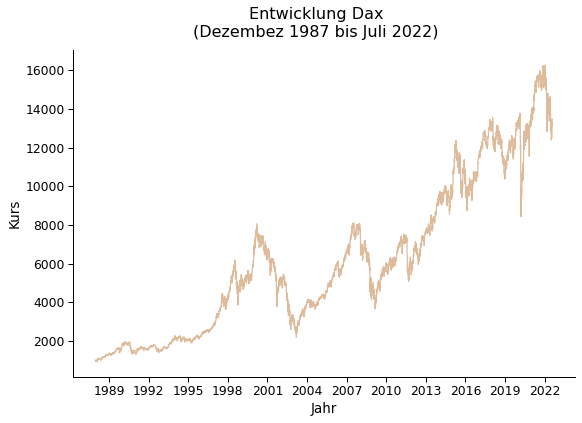
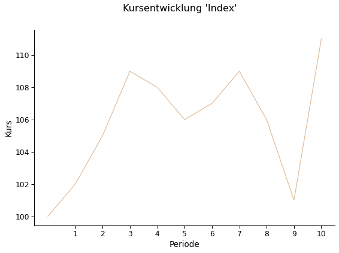
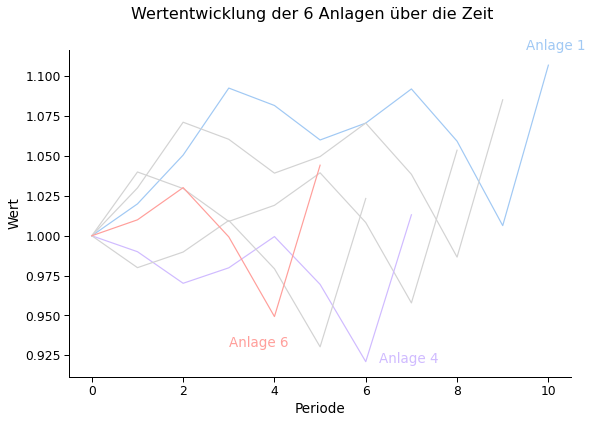
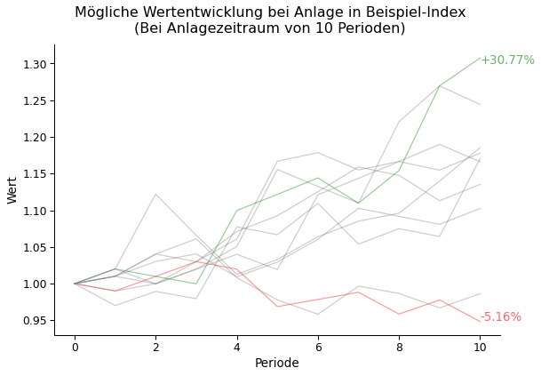
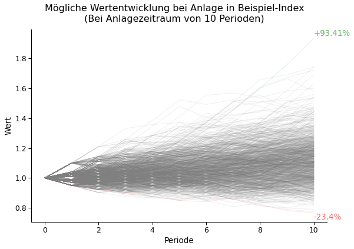
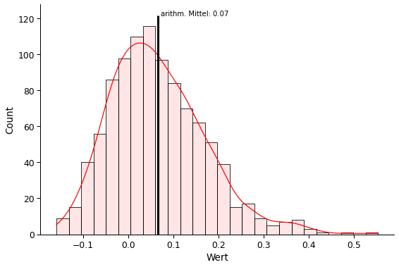

Generiert Graphiken für Skript
Inhalt
Generiert Graphiken für Skript¶
import BusinessAnalytics as BA
from BusinessAnalytics import get_stock_data, plot
import pandas as pd
import numpy as np
import matplotlib.pyplot as plt
import matplotlib.dates as mdates
DAX 1988 - 2022¶
dax = get_stock_data("^GDAXI", start="01-01-1987", end="31-07-2022")
idx = np.argmax(dax["Adj Close"])
dax.iloc[idx]
Date 2022-01-05 00:00:00
Open 16177.44043
High 16285.349609
Low 16161.719727
Close 16271.75
Adj Close 16271.75
Volume 68244500.0
ticker ^GDAXI
Name: 8760, dtype: object
color = BA.plotting.COLORS[5]
ax = plot(data=dax, x="Date", y="Adj Close",
title="Entwicklung Dax\n(Dezember 1987 bis Juli 2022)",
ylabel="Kurs", xlabel="Jahr", show_legend=False,
colors=color )
ax.xaxis.set_major_locator(mdates.YearLocator(3))
ax.xaxis.set_major_formatter(mdates.DateFormatter('%Y'))
plt.savefig("Dax.png", dpi=80)

start = 898
ende = 3453
dax.iloc[[start, ende]]["Adj Close"].pct_change()
898 NaN
3453 2.372615
Name: Adj Close, dtype: float64
start = pd.to_datetime("12.04.2007")
ende = pd.to_datetime("19.12.2008")
dax.set_index("Date")[start:ende]["Adj Close"]
4696/7808 - 1
-0.39856557377049184
6 fiktive Portfolien¶
days = np.arange(0,11)
rets = np.array([ 0.00, 0.02, 0.03, 0.04, -0.01, -0.02, 0.01, 0.02, -0.03, -0.05,0.10 ])
start = 100
index = start * np.cumprod((1+rets))
data = pd.DataFrame({"Kurs": np.round(index), "Periode": days, "rt":rets})
ax = plot(data, x="Periode", y="Kurs",
show_legend=False, colors=color, title="Kursentwicklung 'Index'")
ax.set_xticks(days[1:])
ax.set_xticklabels(days[1:])
plt.savefig("Index_Beispiel.png", dpi=80)

def replace_first_row(_df, to_replace=np.nan, value=1):
cols = _df.columns
_df.iloc[0] = _df.iloc[0].replace(to_replace=to_replace, value=value)
return _df
t_min = 5
n = len(data) - t_min + 1
data_new = (data
.assign(**{f"Anlage_{i}":data["rt"].iloc[1:].add(1).shift(-i+1).cumprod() for i in np.arange(1,n)})
.pipe(replace_first_row, np.nan, 1)
#.melt(id_vars=["Periode", "Kurs", "rt"], var_name="Portfolio")
)
data_new
| Kurs | Periode | rt | Anlage_1 | Anlage_2 | Anlage_3 | Anlage_4 | Anlage_5 | Anlage_6 | |
|---|---|---|---|---|---|---|---|---|---|
| 0 | 100.0 | 0 | 0.00 | 1.000000 | 1.000000 | 1.000000 | 1.000000 | 1.000000 | 1.000000 |
| 1 | 102.0 | 1 | 0.02 | 1.020000 | 1.030000 | 1.040000 | 0.990000 | 0.980000 | 1.010000 |
| 2 | 105.0 | 2 | 0.03 | 1.050600 | 1.071200 | 1.029600 | 0.970200 | 0.989800 | 1.030200 |
| 3 | 109.0 | 3 | 0.04 | 1.092624 | 1.060488 | 1.009008 | 0.979902 | 1.009596 | 0.999294 |
| 4 | 108.0 | 4 | -0.01 | 1.081698 | 1.039278 | 1.019098 | 0.999500 | 0.979308 | 0.949329 |
| 5 | 106.0 | 5 | -0.02 | 1.060064 | 1.049671 | 1.039480 | 0.969515 | 0.930343 | 1.044262 |
| 6 | 107.0 | 6 | 0.01 | 1.070664 | 1.070664 | 1.008296 | 0.921039 | 1.023377 | NaN |
| 7 | 109.0 | 7 | 0.02 | 1.092078 | 1.038545 | 0.957881 | 1.013143 | NaN | NaN |
| 8 | 106.0 | 8 | -0.03 | 1.059315 | 0.986617 | 1.053669 | NaN | NaN | NaN |
| 9 | 101.0 | 9 | -0.05 | 1.006350 | 1.085279 | NaN | NaN | NaN | NaN |
| 10 | 111.0 | 10 | 0.10 | 1.106985 | NaN | NaN | NaN | NaN | NaN |
colors = BA.plotting.COLORS
ax = plot(data=data_new, x="Periode", y=[col for col in data_new.columns if "Anlage" in col],
colors=[colors[0], "lightgrey", "lightgrey", colors[4], "lightgrey", colors[3]],
show_legend=False, xlabel="Periode", ylabel="Wert", title="Wertentwicklung der 6 Anlagen über die Zeit")
xmin, xmax = ax.get_xlim()
ymin, ymax = ax.get_ylim()
ax.annotate("Anlage 1", (xmax-1, ymax), color=colors[0] )
ax.annotate("Anlage 4", (6.3, 0.92), color=colors[4] )
ax.annotate("Anlage 6", (3,0.93), color=colors[3])
plt.savefig("Anlagen_perf.png", dpi=80)

sum(data.query("Periode == 6")["Wert"] < 1)
2
10 zufällige Portfolios¶
def sample_data(data, n, t, replace=True):
return np.random.choice(data, (n,t), replace=replace)
np.random.seed(123545)
n = 10
t = 10
smpl = sample_data(rets[1:], n, t)
cum_rets = np.column_stack((np.ones(n), np.cumprod(1+smpl, axis=1)))
data = (pd.DataFrame(cum_rets.T, columns=[f"Anlage_{i}" for i in range(1,n+1)])
.assign(Periode=np.arange(t+1))
.melt(id_vars=["Periode"])
.rename({"variable":"Anlage", "value":"Wert"}, axis=1)
)
ax = plot(data=data, x="Periode", y="Wert", hue="Anlage",
title="Mögliche Wertentwicklung bei Anlage in Beispiel-Index\n(Bei Anlagezeitraum von 10 Perioden)",
colors=["gray" for i in range(n)],
show_legend=False)
idx_max = np.argmax(cum_rets[:,-1])
idx_min = np.argmin(cum_rets[:,-1])
for i,l in enumerate(ax.lines):
l.set_alpha(0.4)
if i == idx_max: l.set_color("green")
if i == idx_min: l.set_color("red")
ymin, ymax = ax.get_ylim()
ret_max = np.round((cum_rets[idx_max, -1] - 1)*100,2)
ax.annotate(f"+{ret_max}%", (10,ymax*0.98), color="green", alpha=0.6)
ret_min = np.round((cum_rets[idx_min, -1] - 1)*100,2)
ax.annotate(f"-{abs(ret_min)}%", (10,ymin*1.02), color="red", alpha=0.6)
plt.savefig("Anlagen_random.png", dpi=80)

1.000 zufällige Portfolien¶
np.random.seed(123545)
n = 1000
t = 10
smpl = sample_data(rets[1:], n, t)
cum_rets = np.column_stack((np.ones(n), np.cumprod(1+smpl, axis=1)))
data = (pd.DataFrame(cum_rets.T, columns=[f"Anlage_{i}" for i in range(1,n+1)])
.assign(Periode=np.arange(t+1))
.melt(id_vars=["Periode"])
.rename({"variable":"Anlage", "value":"Wert"}, axis=1)
)
ax = plot(data=data, x="Periode", y="Wert", hue="Anlage",
title="Mögliche Wertentwicklung bei Anlage in Beispiel-Index\n(Bei Anlagezeitraum von 10 Perioden)",
colors=["gray" for i in range(n)],
show_legend=False)
idx_max = np.argmax(cum_rets[:,-1])
idx_min = np.argmin(cum_rets[:,-1])
for i,l in enumerate(ax.lines):
l.set_alpha(0.1)
if i == idx_max: l.set_color("green")
if i == idx_min: l.set_color("red")
ymin, ymax = ax.get_ylim()
ret_max = np.round((cum_rets[idx_max, -1] - 1)*100,2)
ax.annotate(f"+{ret_max}%", (10,ymax*0.98), color="green", alpha=0.6)
ret_min = np.round((cum_rets[idx_min, -1] - 1)*100,2)
ax.annotate(f"-{abs(ret_min)}%", (10,ymin*1.02), color="red", alpha=0.6)
plt.savefig("Anlagen_random_big.png", dpi=80)

import seaborn as sns
data_hist = (data
.query("Periode == 6")
.assign(Wert=lambda _df: _df["Wert"] - 1)
)
mu = data_hist["Wert"].mean()
ax = sns.histplot(data=data_hist, x="Wert", color="red", alpha=0.1, kde=True)
ymin, ymax = ax.get_ylim()
ax.lines[0].set_color("red")
ax.vlines(x=mu,color="black", linewidth=3, ymin=ymin, ymax=ymax)
ax.annotate(f"arithm. Mittel: {np.round(mu,2)}", (mu*1.1,ymax), **{"fontsize": 10});

ax = plot(data=data_hist, x="Wert", plot_type="hist",
ylabel="Häufigkeit",
xlabel="Rendite in ct",
show_legend=False)
ax.set_alpha(0.4)
fig, ax = plt.subplots()
ax.plot(cum_rets.T, color="gray", linewidth=0.8, alpha=0.6);
ax.plot(cum_rets[idx_max,:], color="green", alpha=0.4)
ax.plot(cum_rets[idx_min,:], color="red", alpha=0.4)
[<matplotlib.lines.Line2D at 0x7fdb69283670>]
probs = []
for i in np.arange(1,t):
p = sum(smpl[:,i] < 1 ) / n
probs.append(p)
plt.plot(probs)
[<matplotlib.lines.Line2D at 0x7f999d2e5580>]
np.r_?
Type: RClass
String form: <numpy.lib.index_tricks.RClass object at 0x7f9998f7e940>
Length: 0
File: ~/opt/anaconda3/envs/coding4class/lib/python3.9/site-packages/numpy/lib/index_tricks.py
Docstring:
Translates slice objects to concatenation along the first axis.
This is a simple way to build up arrays quickly. There are two use cases.
1. If the index expression contains comma separated arrays, then stack
them along their first axis.
2. If the index expression contains slice notation or scalars then create
a 1-D array with a range indicated by the slice notation.
If slice notation is used, the syntax ``start:stop:step`` is equivalent
to ``np.arange(start, stop, step)`` inside of the brackets. However, if
``step`` is an imaginary number (i.e. 100j) then its integer portion is
interpreted as a number-of-points desired and the start and stop are
inclusive. In other words ``start:stop:stepj`` is interpreted as
``np.linspace(start, stop, step, endpoint=1)`` inside of the brackets.
After expansion of slice notation, all comma separated sequences are
concatenated together.
Optional character strings placed as the first element of the index
expression can be used to change the output. The strings 'r' or 'c' result
in matrix output. If the result is 1-D and 'r' is specified a 1 x N (row)
matrix is produced. If the result is 1-D and 'c' is specified, then a N x 1
(column) matrix is produced. If the result is 2-D then both provide the
same matrix result.
A string integer specifies which axis to stack multiple comma separated
arrays along. A string of two comma-separated integers allows indication
of the minimum number of dimensions to force each entry into as the
second integer (the axis to concatenate along is still the first integer).
A string with three comma-separated integers allows specification of the
axis to concatenate along, the minimum number of dimensions to force the
entries to, and which axis should contain the start of the arrays which
are less than the specified number of dimensions. In other words the third
integer allows you to specify where the 1's should be placed in the shape
of the arrays that have their shapes upgraded. By default, they are placed
in the front of the shape tuple. The third argument allows you to specify
where the start of the array should be instead. Thus, a third argument of
'0' would place the 1's at the end of the array shape. Negative integers
specify where in the new shape tuple the last dimension of upgraded arrays
should be placed, so the default is '-1'.
Parameters
----------
Not a function, so takes no parameters
Returns
-------
A concatenated ndarray or matrix.
See Also
--------
concatenate : Join a sequence of arrays along an existing axis.
c_ : Translates slice objects to concatenation along the second axis.
Examples
--------
>>> np.r_[np.array([1,2,3]), 0, 0, np.array([4,5,6])]
array([1, 2, 3, ..., 4, 5, 6])
>>> np.r_[-1:1:6j, [0]*3, 5, 6]
array([-1. , -0.6, -0.2, 0.2, 0.6, 1. , 0. , 0. , 0. , 5. , 6. ])
String integers specify the axis to concatenate along or the minimum
number of dimensions to force entries into.
>>> a = np.array([[0, 1, 2], [3, 4, 5]])
>>> np.r_['-1', a, a] # concatenate along last axis
array([[0, 1, 2, 0, 1, 2],
[3, 4, 5, 3, 4, 5]])
>>> np.r_['0,2', [1,2,3], [4,5,6]] # concatenate along first axis, dim>=2
array([[1, 2, 3],
[4, 5, 6]])
>>> np.r_['0,2,0', [1,2,3], [4,5,6]]
array([[1],
[2],
[3],
[4],
[5],
[6]])
>>> np.r_['1,2,0', [1,2,3], [4,5,6]]
array([[1, 4],
[2, 5],
[3, 6]])
Using 'r' or 'c' as a first string argument creates a matrix.
>>> np.r_['r',[1,2,3], [4,5,6]]
matrix([[1, 2, 3, 4, 5, 6]])
plt.plot(probs)
[<matplotlib.lines.Line2D at 0x7f99acabe2e0>]
%history -g -f anyfilename
1 * (1.01) * (0.95) * 0.95
0.9115249999999999